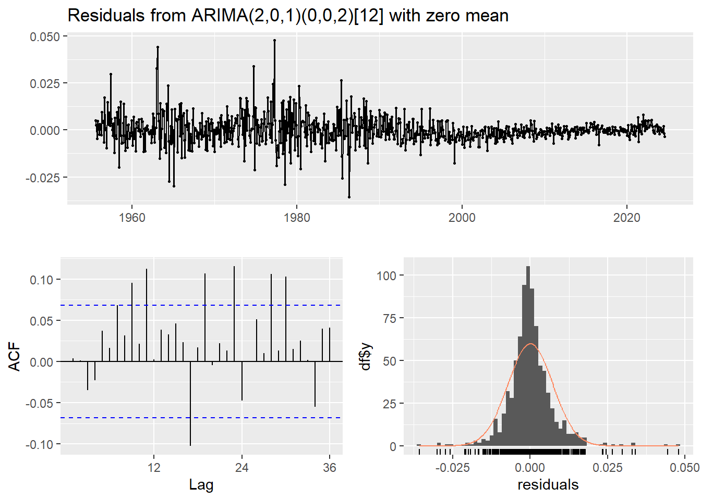

Capítulo 6 VARIABLES EN EL TIEMPO, AJUSTE A MODELO LINEAL Y ESTACIONARIO
6.1 Modelo lineal
plot(Indice_ts, main="Índice en el tiempo", xlab="Tiempo", ylab="Índice")
abline(reg = lm(Indice_ts ~ time(Indice_ts)))## Jan Feb Mar Apr May Jun Jul Aug Sep Oct Nov Dec
## 1955 7 8 9 10 11 12
## 1956 1 2 3 4 5 6 7 8 9 10 11 12
## 1957 1 2 3 4 5 6 7 8 9 10 11 12
## 1958 1 2 3 4 5 6 7 8 9 10 11 12
## 1959 1 2 3 4 5 6 7 8 9 10 11 12
## 1960 1 2 3 4 5 6 7 8 9 10 11 12
## 1961 1 2 3 4 5 6 7 8 9 10 11 12
## 1962 1 2 3 4 5 6 7 8 9 10 11 12
## 1963 1 2 3 4 5 6 7 8 9 10 11 12
## 1964 1 2 3 4 5 6 7 8 9 10 11 12
## 1965 1 2 3 4 5 6 7 8 9 10 11 12
## 1966 1 2 3 4 5 6 7 8 9 10 11 12
## 1967 1 2 3 4 5 6 7 8 9 10 11 12
## 1968 1 2 3 4 5 6 7 8 9 10 11 12
## 1969 1 2 3 4 5 6 7 8 9 10 11 12
## 1970 1 2 3 4 5 6 7 8 9 10 11 12
## 1971 1 2 3 4 5 6 7 8 9 10 11 12
## 1972 1 2 3 4 5 6 7 8 9 10 11 12
## 1973 1 2 3 4 5 6 7 8 9 10 11 12
## 1974 1 2 3 4 5 6 7 8 9 10 11 12
## 1975 1 2 3 4 5 6 7 8 9 10 11 12
## 1976 1 2 3 4 5 6 7 8 9 10 11 12
## 1977 1 2 3 4 5 6 7 8 9 10 11 12
## 1978 1 2 3 4 5 6 7 8 9 10 11 12
## 1979 1 2 3 4 5 6 7 8 9 10 11 12
## 1980 1 2 3 4 5 6 7 8 9 10 11 12
## 1981 1 2 3 4 5 6 7 8 9 10 11 12
## 1982 1 2 3 4 5 6 7 8 9 10 11 12
## 1983 1 2 3 4 5 6 7 8 9 10 11 12
## 1984 1 2 3 4 5 6 7 8 9 10 11 12
## 1985 1 2 3 4 5 6 7 8 9 10 11 12
## 1986 1 2 3 4 5 6 7 8 9 10 11 12
## 1987 1 2 3 4 5 6 7 8 9 10 11 12
## 1988 1 2 3 4 5 6 7 8 9 10 11 12
## 1989 1 2 3 4 5 6 7 8 9 10 11 12
## 1990 1 2 3 4 5 6 7 8 9 10 11 12
## 1991 1 2 3 4 5 6 7 8 9 10 11 12
## 1992 1 2 3 4 5 6 7 8 9 10 11 12
## 1993 1 2 3 4 5 6 7 8 9 10 11 12
## 1994 1 2 3 4 5 6 7 8 9 10 11 12
## 1995 1 2 3 4 5 6 7 8 9 10 11 12
## 1996 1 2 3 4 5 6 7 8 9 10 11 12
## 1997 1 2 3 4 5 6 7 8 9 10 11 12
## 1998 1 2 3 4 5 6 7 8 9 10 11 12
## 1999 1 2 3 4 5 6 7 8 9 10 11 12
## 2000 1 2 3 4 5 6 7 8 9 10 11 12
## 2001 1 2 3 4 5 6 7 8 9 10 11 12
## 2002 1 2 3 4 5 6 7 8 9 10 11 12
## 2003 1 2 3 4 5 6 7 8 9 10 11 12
## 2004 1 2 3 4 5 6 7 8 9 10 11 12
## 2005 1 2 3 4 5 6 7 8 9 10 11 12
## 2006 1 2 3 4 5 6 7 8 9 10 11 12
## 2007 1 2 3 4 5 6 7 8 9 10 11 12
## 2008 1 2 3 4 5 6 7 8 9 10 11 12
## 2009 1 2 3 4 5 6 7 8 9 10 11 12
## 2010 1 2 3 4 5 6 7 8 9 10 11 12
## 2011 1 2 3 4 5 6 7 8 9 10 11 12
## 2012 1 2 3 4 5 6 7 8 9 10 11 12
## 2013 1 2 3 4 5 6 7 8 9 10 11 12
## 2014 1 2 3 4 5 6 7 8 9 10 11 12
## 2015 1 2 3 4 5 6 7 8 9 10 11 12
## 2016 1 2 3 4 5 6 7 8 9 10 11 12
## 2017 1 2 3 4 5 6 7 8 9 10 11 12
## 2018 1 2 3 4 5 6 7 8 9 10 11 12
## 2019 1 2 3 4 5 6 7 8 9 10 11 12
## 2020 1 2 3 4 5 6 7 8 9 10 11 12
## 2021 1 2 3 4 5 6 7 8 9 10 11 12
## 2022 1 2 3 4 5 6 7 8 9 10 11 12
## 2023 1 2 3 4 5 6 7 8 9 10 11 12
## 2024 1 2 3 4 5 6 7 8
Se observan valores homegéneos en los meses y no se observan valores atípicos marcados.
6.2 Modelo ARIMA
##
## OCSB test
##
## data: Indice_ts
##
## Test statistic: -51.3138, 5% critical value: -1.803
## alternative hypothesis: stationary
##
## Lag order 0 was selected using fixed

El componente estacional de Indice_ts no es significativo, debido a esto se aplicará el modelo ARIMA directamente.
Indice_ts_diff <- diff(Indice_ts)
resultado_adf_diff <- adf.test(Indice_ts_diff, alternative = "stationary") ## Series: Indice_ts_diff
## ARIMA(2,0,1)(0,0,2)[12] with zero mean
##
## Coefficients:
## ar1 ar2 ma1 sma1 sma2
## 0.1628 0.3147 0.3815 -0.8884 0.0833
## s.e. 0.2118 0.1230 0.2159 0.0373 0.0375
##
## sigma^2 = 5.259e-05: log likelihood = 2903.25
## AIC=-5794.5 AICc=-5794.4 BIC=-5766.18
##
## Training set error measures:
## ME RMSE MAE MPE MAPE MASE ACF1
## Training set 4.972306e-05 0.0072301 0.004844645 NaN Inf 0.3930951 0.0034672456.2.1 Test de residuos, AFC y PACF
##
## Box-Ljung test
##
## data: residuals(modelo_arima)
## X-squared = 0.010002, df = 1, p-value = 0.9203
De acuerdo con los resultados obtenidos, el p-value es mayor que 0.05, por lo que los residuales se pueden considerar como ruido blanco y el modelo representa bien la estructura de la serie de tiempo.
6.2.2 Pronóstico
forecast_data <- forecast::forecast(modelo_arima, h = 12)
plot(forecast_data, main = "Pronóstico del Índice")plot(forecast_data, main = "Pronóstico del Índice", xlab = "Año", ylab = "Indice_ts_diff", xlim = c(2015, 2025))
grid()
6.2.3 Resultados


##
## Ljung-Box test
##
## data: Residuals from ARIMA(2,0,1)(0,0,2)[12] with zero mean
## Q* = 63.564, df = 19, p-value = 1.043e-06
##
## Model df: 5. Total lags used: 24##
## Shapiro-Wilk normality test
##
## data: residuales
## W = 0.91174, p-value < 2.2e-16El valor de 0.91174 sugiere que los residuales están algo alejados de seguir una distribución normal, lo cual se confirma con el p-value bajo.
##
## Box-Ljung test
##
## data: residuales
## X-squared = 0.010002, df = 1, p-value = 0.9203El valor X-squared bajo, indica que hay poca correlación en los residuales y dado que el p-value es alto, significa que los residuales pueden ser considerados como ruido blanco.